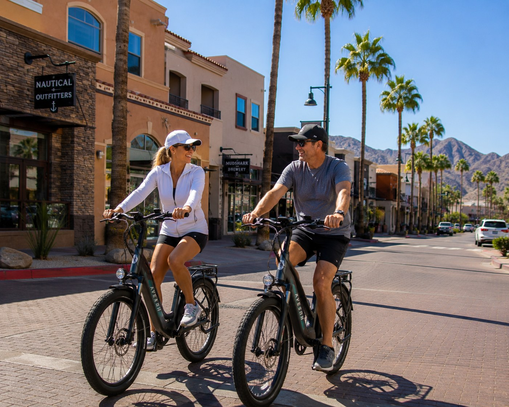
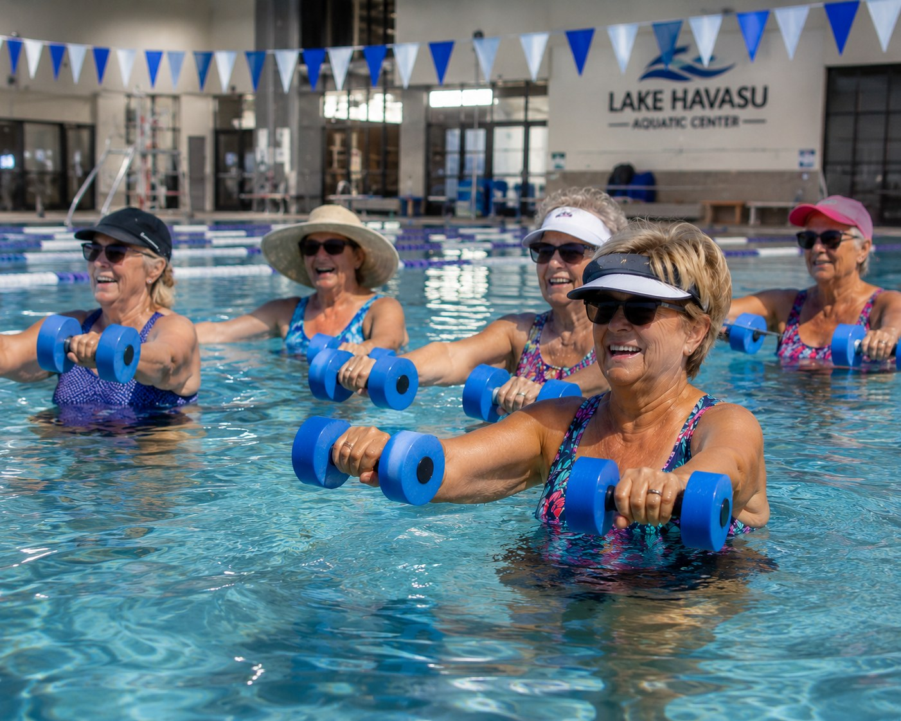
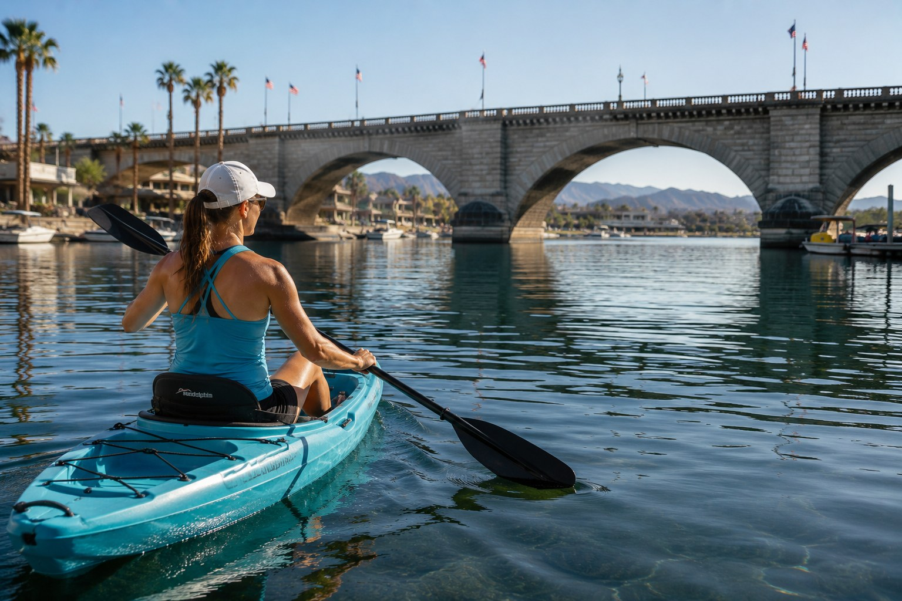

Sports Medicine built around the Havasu lifestyle.
Patients rarely think in medical terminology first. They think: my knee hurts after pickleball, my shoulder slipped on the lake, my athlete twisted an ankle, or I want to keep hiking, golfing, riding and training.
Sports and activities treated.
A quick look at the athletic populations commonly seen in a Lake Havasu Sports Medicine clinic.
Youth Sports
Active Adults
Desert Sports
Water Sports
School sports injuries, return-to-play decisions, and sideline-informed care.
As one of the team physicians for Lake Havasu High School, Dr. Barnes understands the pressure athletes, parents, coaches and trainers feel after an injury. The goal is to identify the problem, protect the athlete and build a safe path back to sport.
- ACL and meniscus injuries
- Shoulder instability and labral injuries
- Ankle sprains and stress fractures
- Patellar instability and tendonitis
- Throwing and overuse injuries


Care for pickleball players, golfers, lifters, hikers, cyclists, swimmers and active retirees.
Staying active is not optional for many Lake Havasu patients. Treatment is built around function: less pain, better motion, better strength and realistic decisions about training, injections, therapy and surgery when needed.
- Tennis elbow and golfer's elbow
- Rotator cuff tendonitis and tears
- Achilles, patellar, quad and biceps tendonitis
- Degenerative meniscus tears and arthritis flares
- Bursitis of the hip, knee, elbow and shoulder





Orthopedic care for Havasu's trails, desert terrain and off-road lifestyle.
Off-road and trail injuries can involve fractures, ligament injuries, tendon ruptures and high-energy trauma. Care starts with accurate diagnosis and a plan that fits the injury, the patient's goals and the demands of the activity.
- Clavicle and wrist fractures
- Shoulder separations and dislocations
- ACL and meniscus tears
- Ankle fractures and sprains
- Achilles tendon ruptures

Care for lake injuries from recreation, competition and weekend adventure.
Lake Havasu is one of the Southwest's premier watersports destinations. Shoulder instability, knee ligament injuries, tendon injuries, hand injuries and fractures can happen when speed, water and impact meet.
- Shoulder dislocations and labral tears
- Rotator cuff injuries
- AC joint separations
- Knee ligament injuries
- Finger, hand, wrist and fracture injuries




How treatment is usually approached.
The right treatment depends on the diagnosis, imaging, activity goals and how much the injury is limiting your life.
Clear diagnosis
History, exam and imaging review to identify the source of pain.
Nonoperative plan
Physical therapy, bracing, topical or oral NSAIDs, activity modification and injections when appropriate.
Advanced options
Cortisone injections or orthobiologics such as PRP or BMAC may be considered for selected patients.
Surgery when needed
Arthroscopy or tendon repair may be recommended when an injury is unlikely to heal or fails conservative care.
Common Sports Medicine procedures.
Surgery is not the first answer for every injury, but it can be the right answer for selected patients.
Knee Arthroscopy
- Meniscus repair
- Partial meniscectomy
- Loose body removal
ACL Reconstruction
- Instability treatment
- Return-to-sport planning
- Rehabilitation coordination
Shoulder Arthroscopy
- Rotator cuff repair or debridement
- Labrum repair for instability
- Biceps tenotomy or tenodesis
- Subacromial decompression/acromioplasty
Elbow & Tendon Surgery
- Tennis elbow surgery
- Biceps tendon ruptures
- Selected tendon repairs
Surgical risks
All surgery has risk, including pain, bleeding, infection, damage to surrounding tissues, need for additional procedures, bone failure, implant failure, soft-tissue failure, blood clot, heart attack, stroke and death. These risks are low, but they are not zero.
Sports Medicine FAQ.
Common questions from athletes, active adults and parents.
Do I need surgery?
Not necessarily. Many sports injuries improve with therapy, bracing, medications, injections or orthobiologics. Surgery is considered when an injury is unlikely to heal, remains limiting despite appropriate care or requires repair for function.
Do I need an MRI?
Sometimes. X-rays, exam findings and your symptoms guide whether advanced imaging is needed. MRI can be helpful for suspected meniscus tears, ACL tears, rotator cuff tears, labral injuries and some occult fractures or stress injuries.
Can I play through my injury?
Some soreness can be monitored, but instability, swelling, weakness, loss of motion, deformity, neurologic symptoms or inability to bear weight should be evaluated. Playing through the wrong injury can make the problem worse.
What is the difference between a strain and a tear?
A strain usually refers to muscle or tendon injury. A tear means fibers have been disrupted. Tears can be partial or complete, and treatment depends on the location, severity and your goals.
Can PRP help my sports injury?
PRP may be considered for selected tendon, ligament, cartilage and joint conditions. It is not the right choice for every injury, and many insurance plans do not cover orthobiologic treatments. Learn more on the Orthobiologics page.
When can I return to sport?
Return-to-play depends on healing, pain control, strength, motion, balance, sport-specific function and the risk of re-injury. The timeline is individualized.
What injuries are common in pickleball?
Common problems include tennis elbow, shoulder pain, Achilles tendonitis, calf strains, meniscus flares, knee arthritis symptoms and falls that can cause wrist or shoulder injuries.
What injuries are common in watersports?
Wakeboarding, waterskiing and PWC injuries can involve shoulder dislocations, labral tears, rotator cuff injuries, AC separations, knee ligament injuries, hand injuries and fractures.
What injuries are common in UTV or desert sports?
Common injuries include clavicle fractures, shoulder separations, wrist fractures, ankle injuries, ACL tears, meniscus tears and higher-energy trauma after falls or crashes.
Ready to get moving again?
Start with a focused Sports Medicine evaluation and a plan matched to your sport, lifestyle and goals.